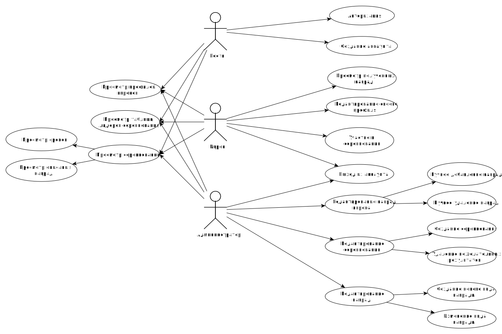
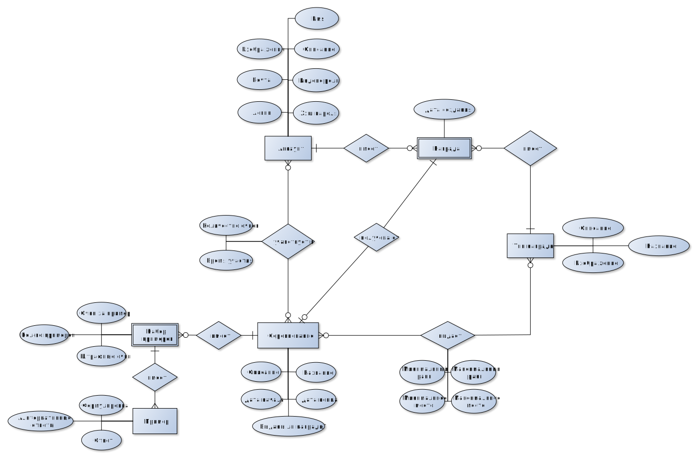
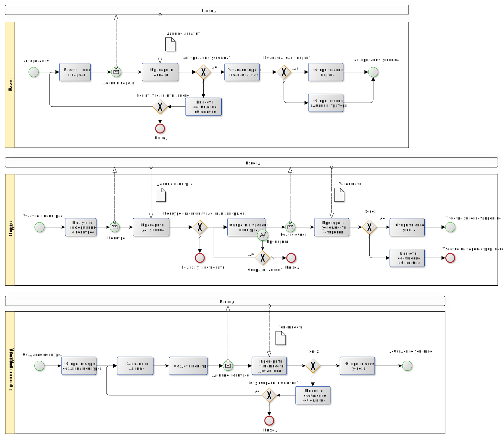

Оглавление
Лабораторная работа №1
Название проекта
Математическая соревновательная игра "Быстрый расчёт"
Краткое описание идеи проекта (1 абзац, 3 предложения);
Создать приложение, в котором игроки могут соревноваться в математической игре между собой за награды. Соревнование имеют срок, в течении которого игроки могут проходить уровень (решать на скорость уравнения) и посылать свои результаты (очки). На основании очков строится таблица лидеров, по которой определяется награждаемые игроки.
Краткое описание предметной области (1 абзац);
Игроки могут учавствовать в соревнованиях благодаря прохождению уровня соревнования (список примеров). После успешного прохождения отправляются очки.
Соревнования имеют определённый срок, после чего они заканчиваются, и в них больше учавствовать нельзя.
Награды выдаются исходя из таблицы лидеров соревнования на срок окончания соревнования.
Краткое обоснование целесообразности и актуальности проекта (1 абзац);
Математическая игра, имея соревновательный контекст, позволит популяризовать навыки быстрого счёта среди населения.
Краткое описание акторов (ролей);
Гость - смотрит на соревнования и игроков.
Игрок - участвует в соревнованиях, получает награды.
Админинстратор - редактирует соревнования, виды наград, инвентари отдельных пользователей.
Use-Case - диаграмма

ER-диаграмма сущностей

Пользовательские сценарии
- Пользователь не авторизуется, является гостем. Просматривает текущие соревнования. Смотрит на таблицу лидеров. Просматривает профиль самого лучшего игрока. Выходит.
- Пользователь авторизуется, становится игроком. Просматривает текущие соревнования. Решает поучавствовать в первом из них. Играет в игру, считаются очки, результат отправляется. Смотрит на таблицу лидеров. Просматривает профиль самого лучшего игрока. Выходит.
- Пользователь авторизуется, становится админинстратором. Создаёт новое соревнование. Настраивает награды за соревнования. Назначает сроки. Выходит.
Формализация ключевых бизнес-процессов

Описание типа приложения и выбранного технологического стека
Тип приложения - Web
Технологический стек:
- backend - C# ASP.NET Core (REST API)
- frontend - TypeScript + React
- БД - PostgreSQL для хранения данных
Диаграмма БД

Компонентная диаграмма

Экраны
Дизайн Figма